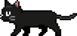

2026.みんチャレ.Shipped & Wip
課題： ヘルスケア事業の主軸を重症化予防へ転換し、LTVを向上させる
施策： PHR機能追加と導線の最適化・専用チーム機能開発
成果： MAU増加と継続率の向上
2025.みんチャレ.Shipped
課題： 自治体事業高齢者講座の時間短縮と体験改善
施策： 専用オンボーディング追加。マニュアルの整理など講座運用改善
成果： 時間短縮と定着率向上
2021.DENSO.Shipped
課題： グループ間の連携強化。複雑な業務プロセスの運用改善
施策： ルールの共通化。申請の電子化。情報発信の動線構築
成果： 入構時間短縮と管理工数の削減
